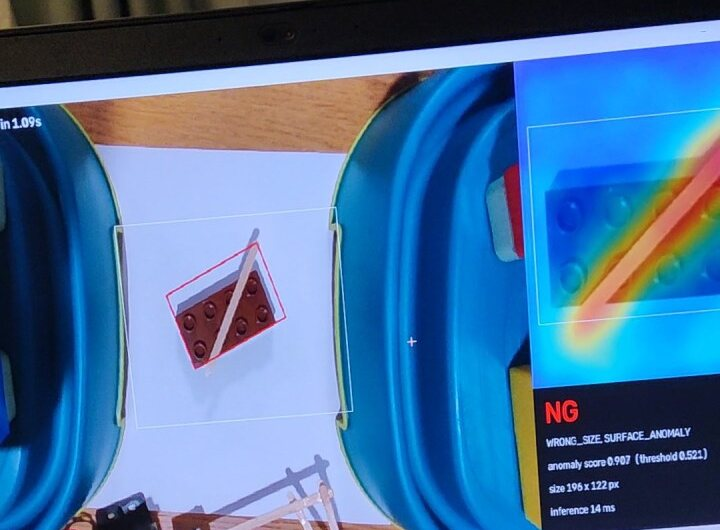
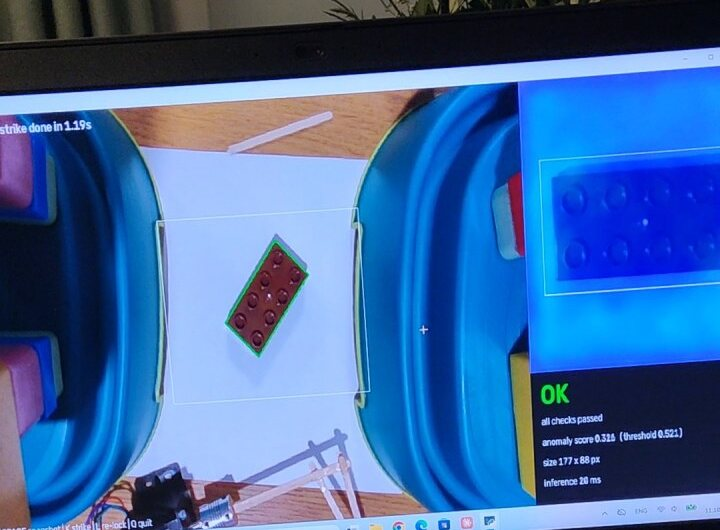
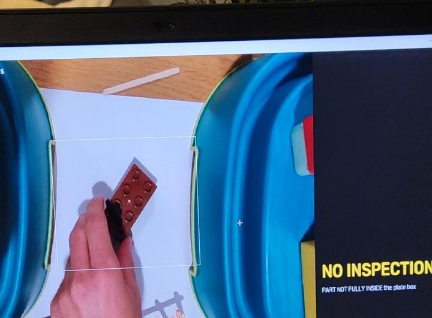
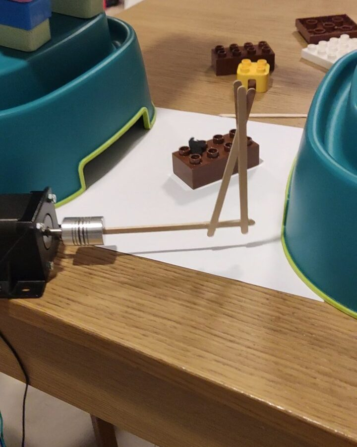
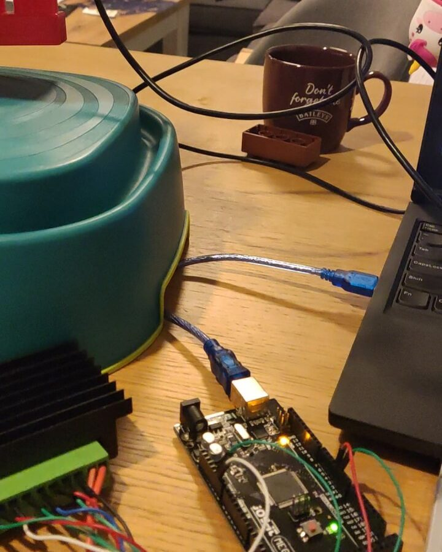
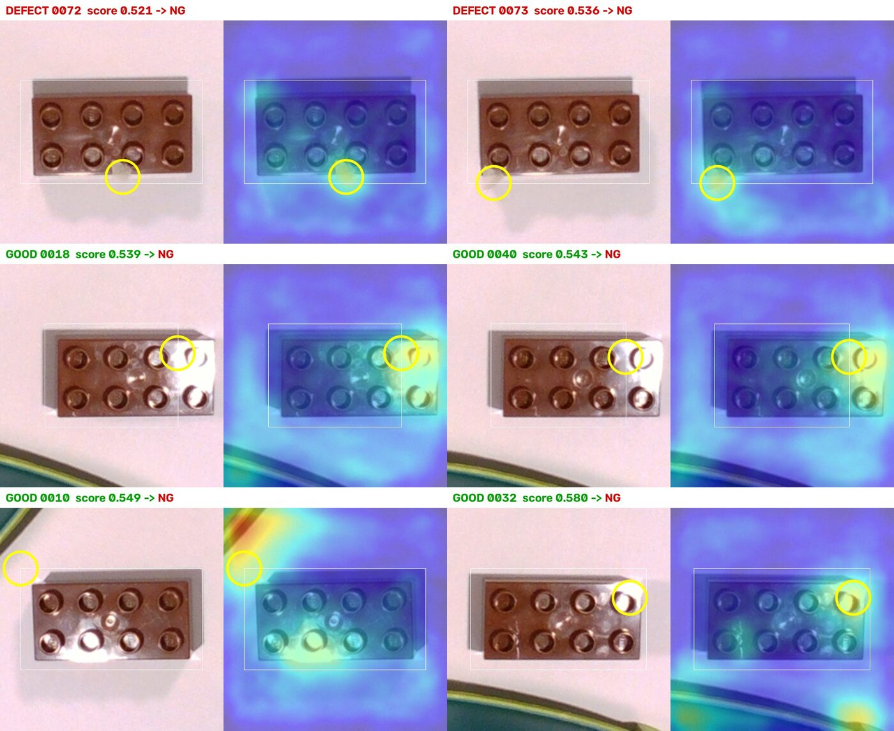
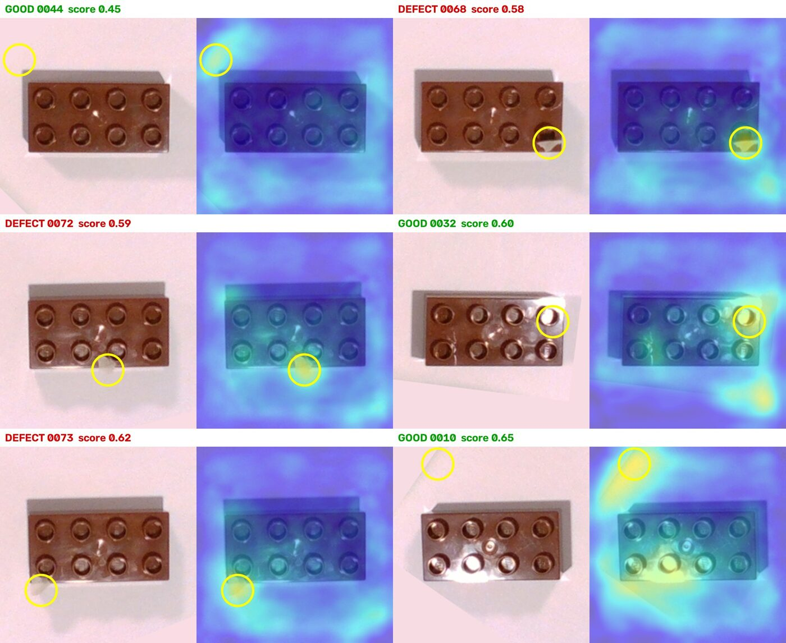

Резултати, без разкрасяване
Проверка върху 32 снимки, които моделът не е виждал: 9 годни и 23 дефектни (легнали и обърнати тухлички, грешен цвят и форма, пръчици, малки парченца хартия).
Малка, но завършена клетка, изградена за няколко дни у дома. 3D камера намира детайла (тухличка LEGO Duplo), AI модел решава дали е годен, а стъпков двигател с рамо удря негодните.
Видеото е в YouTube и се зарежда при натискане. Отвори в YouTube
PatchCore (откриване на аномалии), обучен само на годни детайли. Топлинната карта показва къде е дефектът, а размерът на детайла се измерва отделно.
Компютърът решава OK/NG и командва Arduino, драйвер и стъпков двигател по Modbus RTU. При липса на отговор се показва MOTOR FAULT.
Клетката отказва да инспектира, когато детайлът не е изцяло в зоната, когато има повече от един детайл или ръка в зоната (NO INSPECTION).
Заключени експозиция, усилване и баланс на бялото с проверка за несъответствие; зона за инспекция, настроена на живо; детайлът се завърта към стандартна ориентация преди анализа.



Детайлът се търси само в зададената зона, за да не пречат околните предмети. Ако нещо стърчи извън зоната или има повече от един детайл, инспекция не се прави.
Детайлът се завърта с дългата страна хоризонтално и се изрязва 240×240 px. Моделът винаги го вижда в една и съща ориентация.
Дължина и ширина спрямо статистиката на годните детайли. Грешна форма (2×2, плочка, легнала тухличка) се хваща детерминирано и обяснимо.
PatchCore дава топлинна карта. Оценката е максимумът ѝ само в областта около детайла, а не в целия кадър.
OK само ако всички правила минават и оценката е под прага; NG носи причината. Рамото удря NG детайла, а камерата проверява, че той наистина е помръднат.


Проверка върху 32 снимки, които моделът не е виждал: 9 годни и 23 дефектни (легнали и обърнати тухлички, грешен цвят и форма, пръчици, малки парченца хартия).
Изберете точка, за да видите снимката с топлинната карта.
| Снимка | Истински клас | Оценка | Решение |
|---|
Всички 23 дефекта са хванати. 12 от правилото за размер, останалите от AI модела.
4 от 9 годни са отхвърлени погрешно. За да се хванат най-малките парченца хартия (0.52–0.54), прагът е нисък, а годни тухлички с отблясъци са малко над него.
Оставих резултата такъв, какъвто е. Перфектен резултат при 32 снимки би изглеждал нагласен, а причините за грешките са известни и се решават.

В първата версия, за да не се виждат кутиите, всичко извън зоната се „боядисваше“ в цвета на хартията. Топлинните карти показаха, че това създава нов проблем: при погрешно отхвърлените годни тухлички най-горещата точка е върху шева, където боядисаната площ среща истинската хартия. Моделът никога не е виждал такъв шев и го приема за аномалия.
Грешката беше в обработката, не в детайла или модела. Сега нищо не се боядисва: зоната само определя къде да се търси детайлът, а оценката се смята само около него. Измерване, а не догадка, промени архитектурата.

Дифузер на светлината или кръстосана поляризация, стандартът за гланцова пластмаса; повече годни примери с отблясъци в обучението; намиране по дълбочина, за да не се отрязва осветеният край.
Оценка само в областта на детайла (вече е така) и по-плътна зона за инспекция; в реална клетка фиксиран фон.
Намиране на детайла по дълбочина: сянката няма височина. Покритието с дълбочина в зоната е 94–99 %.
Пак дълбочина вместо цвят.
Три зони вместо един праг: OK / NG / RECHECK. Граничен детайл се заснема отново и при съмнение клетката спира за оператора. Нищо не се пропуска или изхвърля „тихо“.
Прагът се избира върху валидационен набор, а крайните числа се отчитат веднъж, върху отделна сесия.
По пътя имаше и „полеви“ проблеми, които всяка клетка среща: USB 2 кабел, който ограничава камерата, лампа, която пробива дупки в картата на дълбочина, DIP превключватели, четени наобратно (3.0 A вместо 1.0 A), разхлабени проводници, предмети, преместени след калибриране. Всеки е открит с измерване и е записан в документацията.
Компютърът (master) и Arduino (slave) говорят по Modbus RTU със същата карта на регистрите, която би се конфигурирала към реален PLC. Всеки удар минава през 4-стъпков handshake:
NOT_HOME и не приема удари, докато операторът не върне пръчката;Детайлът се успокоява, следва инспекция, удар и проверка с камерата, че детайлът наистина е помръднат. Ако не е, клетката съобщава REJECT_FAILED.
Логиката на Arduino е отделена от хардуера и се тества на компютъра, включително срещу истинския master, с pytest и C++ тестове.
Python, OpenCV, Intel RealSense SDK, PyTorch и anomalib (PatchCore, WideResNet-50), Arduino (C++), AccelStepper, Modbus RTU, pytest.
Целият код е в GitHub: анализът на Python, фърмуерът за Arduino, тестовете, както и design spec и бележките от първата проба.